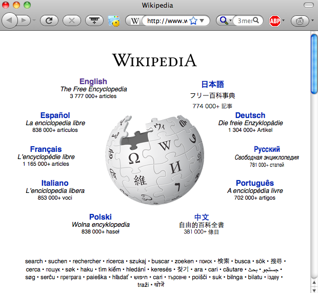

AltoのSmalltalkのメニュー
ユーザインタフェース技術とは 機械やシステムを人間が簡単に利用できるようにするための技術の総称です。 このような技術は非常に重要であるのに加え、 人間にとって使いにくい機械やシステムがあれば 機械やシステム側に問題があると考えるのが現在では常識になっていますが、 昔は「人間の努力や練習が足りない」と考えられることが多かったようです。 楽器の演奏は難しいものですが、 楽器が下手な人が 「演奏するのが難しい楽器があるのは変だ」 などと言ったら、練習が足りない人間が何を言っているんだと思われるのが普通でしょう。 計算機や電化製品を使う場合も、 うまく使いこなせない人がそのことを恥ずかしく思ったり、 使いこなせるようになるまで頑張って練習しようと思ったりすることが 昔は多かったようです。 しかし心理学者のDonald Normanが 「誰のためのデザイン?」 などの本でこの考えの間違いをわかりやすく説明したおかげで、 現在はこういう考えをする開発者やユーザはほとんどいなくなったように思われます。 楽器の場合は練習すればするほど上手に演奏できるようになるものですし、 練習により愛着がわくこともありますが、 誰もが便利に使えることが望ましい機械を使うために練習や修練が必要なのであれば 困ったものだといえるでしょう。
複雑な制御パネルといえば飛行機のコックピットを連想しますが、 昔の計算機の制御パネルは飛行機のコックピットと似たようなものだったようです。 このようなものは「操作しやすさ」とか「直感的」とかとは全く無縁のものに思われます。 このような複雑な制御パネルは専門家にしか使えないことは明らかですが、 パネルの複雑さに対応するほど複雑な用途に利用できたかどうかは疑問です。
初期の計算機の制御パネル
一方、最近の計算機は形態も使い方もどんどんシンプルになってきています。 パソコンの入出力装置コネクタは減る一方ですし、 iPadのようなタブレット計算機には ボタンやコネクタは数えるほどしか無いにもかかわらず、 昔に比べるとはるかに複雑な仕事ができるようになってきています。 これはすべてユーザインタフェース技術の進化のおかげといえるでしょう。
飛行機のコックピット
最近はユーザのほとんどが計算機の専門家ではないのにもかかわらず、 様々なエンターテインメントに計算機を利用していますし、 記憶力が足りなかったり手足が不自由だったりといった 弱者をサポートするような用途にも 計算機が広く使われるようになってきました。 従来の計算機ユーザのほとんどは 計算機に詳しく頭脳が明晰で手先が器用な「強者」であったのに対し、 これからのユーザのほとんどはなんらかの意味での「弱者」が中心となると考えられ、 個々のユーザの弱点を補強するような用途に利用される機会がますます増えるはずです。
あらゆる人間が計算機ユーザとなることを考えると、 「いつでもどこでも」計算機が使えるだけでは不充分で、 「いつでもどこでも誰でも」使える計算機が必要になります。 様々な機器や住居などを「誰でも」苦労なく使えるようにする 「ユニバーサルデザイン」という考え方が近年注目されていますが、 現在ユニバーサルなユーザインタフェースへの大きな パラダイムシフトが起こりつつあるといえるでしょう。
初期の計算機は前の写真のような複雑な制御パネルを持っていたようですが、 計算機がより一般的に利用されるようになるにともなって、 キーボードと文字表示端末を利用するCLIが 大型計算機でも小型計算機でも広く利用されるようになりました。 大型計算機ではプログラムや計算機処理を指示するパンチカードと 呼ばれるものが利用されていました。 初期のパソコンもキーボードと文字ターミナルが操作の基本になっていました。 計算機が使われるようになる以前からタイプライターが欧米では普及していたため 入力装置として自然であったことに加え、 文字列は表現力が高いために 単純な仕組みにもかかわらず複雑な入出力を利用することが可能だったからだと 思われます。 文字の入力と出力ができる文字端末さえあれば計算機を利用することができるので、 共用の計算機に文字端末をケーブルで接続して利用するという方法がよく使われていました。
CLIの基本操作は以下のようになっています。
dateというコマンドを実行する処理は以下のようになります。
% "のようなプロンプト文字を送り、文字端末がそれを表示する
date"のようなコマンド文字列を入力してから改行キーを押す
date"という文字列が計算機に送られる
% "のようなプロンプト文字を送り、文字端末がそれを表示する
Unixでは計算機プログラムもユーザも同じように文字列をやりとりするので、 両者を区別せずに使うことができます。 たとえばユーザが"date"と入力するかわりに "date"という文字列を出力するプログラムを使ってdateコマンドを実行することもできますし、 "date"と書いてあるテキストファイルを使ってdateコマンドを実行することもできます。 このため、CLIで使うコマンド文字列を並べるだけでそれがプログラムになってしまいます。 このようなシンプルで汎用的な設計のおかげで Unixは多くのユーザから絶大な支持を得ることができました。
CLIを使ってプログラム開発をする場合、
計算機と文字列のやりとりをしながらプログラムを編集する必要があります。
たとえばUnixのed
というテキスト編集プログラムを使って文字端末でC言語のプログラムを開発するには
以下のようにプログラムを編集することになります。
太字がユーザの入力です。
% ed hello.c
hello.c: No such file or directory
i
#include <stdio.h>
main(){ printf("Hello!\n"); }
.
1
#include <;stdio.h>
2
main(){ printf("Hello!\n"); }
d
i
main(){ printf("Hello, world!\n"); }
.
w
56
q
% cc hello.c
% ./a.out
Hello, world!
%
printf()はC言語の関数で、
カッコの中の引数文字列を「標準出力」に出力します。
このプログラムを実行すると
計算機は"Hello, world!"とい文字列を文字端末に出力し、
文字端末はそれを画面に表示することになります。
このように、単純な入出力関数を利用するだけでインタフェースを作れてしまう点は
CLIの大きな利点といえるでしょう。
しかしこのように1行ずつ編集しながら大きなプログラムを作ることはほとんど不可能ですから、 実際には文字端末の全画面を利用してプログラムを編集する 「スクリーンエディタ」と呼ばれるプログラムが使われています。 Unixでは「vi」や「Emacs」というスクリーンエディタが古くから使われており、 今でもプログラム開発者などには人気があります。 スクリーンエディタでは全画面を利用してテキスト編集を行なうため、 画面の任意の位置に文字列を表示する必要があります。 たとえば計算機側プログラムから文字端末に対して 「画面の上から2行目/左から5桁目に"c"という文字を表示する」 といった指示をする必要があります。 一般的な文字端末では 計算機から送られてきた文字列がそのまま左から右に表示されるようになっているので、 特別な位置に文字表示するためには 「エスケープシーケンス」という特殊な制御文字列が利用されます。 たとえば広く利用されていた「VT100」という文字端末では、 'ESC'(0x1b) '[' '2'(0x32) ';' '5'(0x35) 'f' というバイト列を送ることによって カーソルを画面の上から2行目/左から5桁目に移動することができます。 これ以外にもVT100では何十種類ものシーケンスが定義されています。
計算機にケーブルで接続されたVT100のような文字端末を利用する状況において こういう工夫が必要になるので、 パソコン上のUnixのスクリーンエディタを利用するときは エスケープシーケンスのようなものは必要ないはずなのですが、 これを前提としたスクリーンエディタがいまだに広く使われているため、 文字端末をエミュレートするプログラムがいまだに現役で利用されています。 たとえばMacにはTerminal.appというアプリケーションがあり、 この上でUnixのCLIを利用することができます。 Terminal.appはMacのGUI画面上のウィンドウで動作するわけですが、 その上に文字を表示するためには viやEmacsなどからエスケープシーケンスが送られていることになります。 本物のvt100を現在利用している人は皆無と思われますが、 vt100互換の文字端末エミュレータはまだまだ現役で利用されているのは 興味深いところです。
VT100端末
人間が計算機にコマンド文字列を送ると 計算機がコマンドを実行して結果を人間に返すという処理を繰り返すCLIは 現代的なユーザインタフェースとはいえませんが、 現在でも有効な状況は少なくありません。 文字列のやりとりはハードウェア的にもソフトウェア的にも実装が簡単なので、 最低限のインタフェースだけ備えておきたい機器では CLIだけ用意しておけば良いでしょう。 また、このような手法だと ユーザの操作と計算機の動作が常に決まった順番で行なわれるため、 状態遷移の扱いが簡単で、 ソフトウェア作成の手間が小さくてすみます。
インターネットの基本プロトコルはCLI的なインタフェースになっています。 たとえばインターネット上のメール転送プロトコルである SMTP(Simple Mail Transfer Protocol) はCLIを採用しているので、 以下のようにユーザが直接SMTPサーバに接続して メール転送を依頼することが可能になっています。 太字がユーザの入力です。
メール転送を管理するSMTPサーバには 普通は他のメールサーバやメーラプログラムからアクセスするものですが、 プロトコルがCLIになっているおかげで、 このようにユーザが直接操作したり実験やデバッグを簡単に行なうことができます。% telnet smtp.example.com 25 # メールサーバに接続 Trying 192.0.43.10... Connected to localhost. Escape character is '^]'. 220 smtp.example.com ESMTP Postfix mail from:masui@pitecan.com # Fromアドレスを指定 250 2.1.0 Ok rcpt to:masui@pitecan.com # Toアドレスを指定 250 2.1.5 Ok data # メール本文を指定 354 End data with <CR><LF>.<CR><LF> test test . # 本文終了 250 2.0.0 Ok: queued as 78DD08F8535 quit # メール転送依頼終了 221 2.0.0 Bye Connection closed by foreign host. %
プログラムの作成が容易であり、 遠隔マシンのプログラムを操作するのが簡単だといった利点があるので 現在でもCLIは利用されてはいるのですが、 人間が計算機と対等のレベルでコマンドを覚えておく必要がありますし、 キーボード操作に熟練しなければ活用することができないので、 一般ユーザが使うパソコン用のインタフェースとしては現在ほとんど使われていません。
Alto
Altoは商用に販売されたものではありませんが、 その後Xeroxは 1981年に Xerox Star というワークステーションを販売し、 1982年には日本語対応した JStarも 販売を開始しました。 その後、Sun Microsystems社や Silicon Graphics社などから GUIをもつUnixワークステーションが続々と販売されるようになりました。 大学においても各種のGUIの研究開発が盛んに行なわれました。 1982年にはカーネギーメロン大学でAndrewシステムが開発されて 学内で広く利用されるようになりましたし、 1984年には MITでX Window Systemの開発が開始され、 現在でも各種のUnixマシン上で広く利用されています。
Sketchpad
Steve JobsがPARCを見学したとき見たAltoのGUIに衝撃を受けて これをパソコン上に実現したいと考えたことは有名です。 Appleは1983年に初のGUI搭載パソコン Lisa を販売しました。 また1984年には廉価版のMacintoshも販売開始しました。 Appleを離れたSteve Jobsは1985年に NeXT Computerを創業し、 最初の製品NeXTcubeを1988年に発売しました。 その後NeXTはAppleに買収された結果、 もともとAppleで開発されたGUIとNeXTのGUIを融合した形のMac OS Xが 現在のMacで利用されています。 また 1995年のWindows95の発売依頼、 多くのユーザがMicrsoft社のOS上でWIMPベースのOSを利用するようになり 現在に到っています。
GUIではできる限り「直接操作」をサポートするように作られています。 直接操作とは メリーランド大学のBen Shneidermanが命名した概念で、 実世界で書類を扱うのと同じような感覚で計算機データを扱うインタフェース手法です。 パソコンのデスクトップでは、 書類をつまんだ手を動かすと書類が動くのと同じような感覚で マウスボタンをクリックして動かすことによりウィンドウやファイルが動きますが、 このような連続的かつ可逆的なインタフェースを 直接操作インタフェースと呼びます。
GUIの直接操作では具体的な対象に対して具体的な操作を行なうことができます。
GUIでは操作対象も操作の量も目で見えますが、
CLIではこのような直接操作ができません。
データを移動するためには移動パラメタが必要ですし、
もとに戻すためには逆のパラメタを指定する必要があります。
操作対象は名前で指定しなければなりませんし、
操作の量は数字やシンボルで指定しなければなりません。
ハンドルを回して車を運転するようなものがGUI操作だとすると、
"turn right 30"
のようなコマンドを入力しながら車を運転するのがCLIだといえるでしょう。
操作性が圧倒的に違うことは明らかです。
ここまで極端でない場合でも、
大抵の人にとっては
シンボルや数値を利用して何かを操作するより、
具体的な直接操作の方がわかりやすいものです。
文字の読み書きができない子供でもGUIならば使うことができる場合があります。
メニューやスライダのようなGUI部品に似たものが現実世界に存在するわけではなく、 これらは純粋に計算機操作のために発明された工夫であるにもかかわらず、 これらの部品はMacでもWindowsでも使い方が似ています。 何も無いところから発明されたものですから 最初から完璧なものが存在したわけではありません。 現在のメニューやスクロールバーの形態は時間をかけてGUIが進化した結果であり、 生物が時間をかけて進化してきたのと同じように、 時間をかけて現在のような形に収束していることになります。
Alto上のSmalltalkでは以下のようなプルダウンメニューが利用されていました。
Altoに触発されてAppleで開発されたLisa上のメニューは 現在利用されているものにかなり近いものになっています。 メニューを改良する研究は長年行なわれていますが、 基本的な形はあまり変わっていません。
AltoのSmalltalkのメニュー
上下にポインティングデバイスを移動して項目を選択するプルダウンメニューでは 選択項目を目で確認しながら操作を行なう必要があるので、 ポインティングデバイスを動かす方向によって項目を選択する 「パイメニュー」が考案されました。 パイメニューでは、項目がどの方向にあるかを覚えている場合は メニュー項目を目で確認することなく項目選択を行なうことができます。
Lisaのメニュー
パイメニューを文字入力に利用するT-Cubeという手法も提案されています。 操作を開始した場所に応じて異なるパイメニューを表示することにより、 ポインティングデバイスで指定する位置と動かす方向の組み合わせによって 文字を入力していくことができます。
パイメニューの例
iPhoneなどで利用されている「フリック入力」は 日本語入力にT-Cubeを応用したものです。
T-Cube
iPhoneの「フリック入力」
スクロールバーの位置にマウスカーソルを移動すると矢印が表示され、 スクロールの方向や操作を指示できるようになっています。
Smalltalkのスクロールバー
AppleのLisaやMacintoshでは これを改良した以下のようなスクロールバーが利用されていました。 スクロールバーのノブは固定されています。
スクロールバーの矢印
Lisaの画面
NeXTstepではスクロールバーは左側に戻り、 スクロールバーのノブの大きさが表示領域の大きさにを示すようになっています。
Macintosh System 4.2 (Finder version 6)
現在のMacやWindowsではスクロールバーは右側が標準になっています。
NeXTstepのスクロールバー
スクロールバーが発明されてから20年以上たちますが、 微妙に機能が異なるものが提案されてきた結果、 徐々に進化して従来よりは使いやすいものに変化していることは確かなようです。
Macのスクロールバー
NeXT社により開発されたInterface Builderにより、 GUIツールキットの部品を対話的に画面上に配置することによって GUIアプリケーションを開発することができるようになりましたが、 このようにオブジェクト指向プログラミングとグラフィカル設計を組み合わせた 開発手法が一般的になり現在まで続いています。
NeXTstepのInterface Builder
GUIでは直接操作によって様々な作業を楽に行なうことができますが、 CLIの方が便利な場合も少なくありません。 例えば、名前や数字を明示的に指定したい場合、 文字列をユーザが簡単に指定できるCLIの方が便利です。 "abc"という文字列を含むテキストファイルを捜したい場合、 Unixでは "grep abc *.txt" というコマンドを入力するだけですみますが、 GUIでは何らかの方法で検索アプリケーションを起動してから 検索されるファイルや検索文字列などの条件を指定しなければなりません。 また正確な値を指定するのも面倒な場合があります。 ウィンドウを画面の左端に移動することは簡単ですが、 左からちょうど10ピクセルのところに移動させることは困難です。
現在のパソコンGUIはマウスのようなポインティングデバイスを うまく操作しなければならないため、 これが苦手な人にとってはCLIの方が都合が良いということもあります。 計算機を誰もが理由できるようにするために考慮すべき点については、 後で「ユニバーサルデザイン」のところでもう一度考えたいと思います。
複雑さとの闘い
ユーザにとって単純で使いやすいGUIを実現するためには 複雑なプログラミングが必要になります。 このためGUIでもCLIでも総合的には複雑さの量は変わらないという説もありますが、 殻の一部を割って卵を立てるような単純な技術がまだ発見されていないだけかもしれません。 毎日あたりまえのように行なっている操作であっても、 複雑なインタフェースを単純な方法で置き換えられる可能性があります。Gyazo
パソコン画面の一部をWebにアップロードしたいとき、というような手順をとっている人が多いと思いますが、 画像編集ソフトウェアを起動したり、ファイルに名前をつけたり、 画像をアップロードできるWebサイトを利用したり、 単純な仕事にもかかわらず意外に手間がかかってしまいます。
- 画面のスクリーンダンプをとってファイルにセーブする
- 画像編集ソフトウェアを起動する
- スクリーンダンプされたファイルを開いて一部を選択し、選択部分をファイルにセーブする
- セーブされたファイルをWebにアップロードする
私が開発したGyazoというシステムを使うと、という手順だけで自動的に領域の画像がWebサイトにアップロードされて URLが返されるようになっています。 画像をアップロードするという単純な機能ですが応用は広く、 画像を利用したコミュニケーションや資料作成が楽しくなりました。
- Gyazoアプリを起動する
- アップロードしたい領域をマウスで指定する
Dynamic Macro
ワープロやテキストエディタで 同じような操作を何度も繰り返さなければならないことがよくあります。 たとえばすべての文字列Aを文字列Bに置き換えたい場合、 Aを検索してからBに置き換えるという操作を何度も実行するのは面倒ですから、 ある文字列を別の文字列に置き換えるという機能が大抵のエディタには用意されています。では、Javaのすべてのコメント("//"で始まる文字列)を消したい場合はどうすればよいでしょうか。 そのようなコマンドはエディタに用意されていませんから、 "//"を検索する操作と文字列を消す操作を 順番に自力で処理していかなければならないでしょう。 私が作成したDynamic Macroというシステムを使うと、 このような編集処理の繰り返しでも簡単に実行することができます。
Dynamic Macroの原理は単純で、 「同じ操作を2度以上繰り返した後で繰り返しキーを押すと 繰り返された操作をもう一度実行する」というものです。 文字列Aを文字列Bに置き換えたい場合は、 Aを検索してからBに置き換える操作を二度繰り返しした後で 繰り返し実行キーを何度か押せば良いですし、 コメントを消したい場合は コメントの先頭を検索して移動してから 行末までの文字列を消去するという操作を二度行なった後で 繰り返し実行キーを押すことにより同じ操作が繰り返されます。 Dynamic Macroを使うと、どのような繰り返し操作でも簡単に再実行させることができるので、 検索+置換のような特殊な機能をエディタに用意する必要がなくなってしまいます。
コロンブス指数
システムのインパクトをシステムの複雑さで割った値を私は「コロンブス指数」と呼んでいます。 単純なのに役にたつシステムはコロンブス指数が高いことになります。 GyazoやDynamic Macroのようなシステムは 非常に便利ですが、システムの構造は単純なので コロンブス指数が大きくなっています。 複雑な処理を行なうのに複雑な操作が必要なのは仕方がないかもしれませんが、 簡単なことを行なうためにも複雑な処理が必要な場所が沢山残っているのは問題です。 コロンブス指数が高いシステムをまだまだ発明していくことができると考えています。
ズーミングインタフェースを用いると大量のデータを扱うことができることに加え、 可逆的な操作が可能だという利点があります。 ズームイン操作によって画面の一部を拡大した場合、 逆の操作でズームアウトさせることは自然ですから、 ズームインして一部を拡大表示した後で ズームアウトして全体を表示するといった操作を 連続的に直感的に行なうことができます。 ズーミングインタフェースはこのような利点があるため、 新しいインタフェースとしてかなり期待されましたし、 テレビのような家電機器に搭載しようという製品企画もあったようですが、 結局最終的に製品に採用されたものはほとんどありませんし、 パソコンのデスクトップとしても流行することはありませんでした。 あまり流行しなかったのは、 直観的なズーミング操作インタフェースが存在しなかった ことと、 迷子になって途方にくれてしまうことがある ことが最大の理由と思われます。 うっかり何も無い場所でズームインすると画面が 真っ白になってしまい、自分の居場所が全くわからなくなってしまうからです。 もちろんズームアウトするともとの画面に戻るのですが、 一瞬でも途方に暮れる状況になるのは好ましいことではありません。 また、 複数の場所を同時に閲覧することが難しい ことも問題だったかもしれません。 情報が散在している場合、 必要な情報をうまく閲覧するためには 空間把握能力と操作の熟練が必要であることが問題だったのでしょう。
PhotoMesa
古い携帯電話は文字端末的なインタフェースを持つものもありましたが、 iPhoneの発売依頼、 最近のスマートフォンは タッチパネルを利用してパソコンと同じようなGUIを使うのが普通になっています。 デスクトップ計算機の大きな画面の前で、 キーボードやマウスを使って計算機を操作する場合と異なり、 モバイルコンピューティングで使われる機器には様々な制限があります。 持ち歩いて使う機器は どうしても画面が小さくなりますし、 制限のある入力装置しか使うことができません。 歩きながら使ったり満員電車の中で使ったりする場合は、 画面を見ることができないかもしれませんし、 片手しか使うことができないかもしれません。 このため、小さな画面を効果的に利用する技術や 片手で文字を入力する技術などが開発されてきました。 また、同じ端末がいろいろな場面で使われることが想定されるため、 持って歩きながらでも 机の上でもベッドの上でも使えるようなインタフェースが工夫されています。
見えないところで動く計算機は「Invisible Computer」と呼ばれることもあります。 Donald Normanは、 近い将来「Information Appliance」が重要になると言っています。 使い方がよくわからない装置やセンサに埋もれて暮らすのが ユビキタスコンピューティングではなく、 センサや計算機の存在を意識しなくても自然に計算機を利用できる環境こそが ユビキタスコンピューティング環境だということになります。 計算機が見えないということを強調するため、 Weiserはその後 このような技術を「Calm Technology」という名前で呼ぶようになりました。 また、こういった環境は 「アンビエント」 「Disappearing Computing」などと呼ばれることもあります。
計算機を持ち歩いて使うモバイルコンピューティングは ユビキタスコンピューティングに到るまでの途中段階の一形態といえるでしょう。 モバイルコンピューティングでも ユビキタスコンピューティングでも、 計算機はどんどん小さく控え目になり、 計算機を使うという感覚が消えていくことが将来目標になっているといえるでしょう。 その結果、現在のようなGUIが使えない状況が増え、 新しい形のインタフェースが必要になってくると思われます。
現在ブラウザが爆発的に使われていることを考えると、 現在のGUI的なものを今すぐ消してしまうことは難しいかもしれません。 現在重要なデータはすべてパソコン画面やブラウザ上に表示されるようになっているので、 これらをいきなりInvisibleにするといっても賛同は得られないでしょう。 しかし、キーボードやマウスがなくても ブラウザを通して得られるのと同じような結果が簡単に得られるのであれば GUIにこだわる人は減ってくるでしょう。 モバイル/ユビキタス時代にマッチした入力デバイスとインタフェースを 工夫することにより、 インビジブルな計算機は徐々に浸透してくると考えられます。
ファイルをプリンタに出力したい場合、 画面上のプリンタのリストの中からプリンタを選択することになりますが、 似たような名前や外見のプリンタも多いので、 リスト中のプリンタ表示が実際にはどのプリンタのことを示しているのか わかりにくいこともよくあります。 目の前にある文書を目の前にあるプリンタで印刷したい場合でも、 画面上のGUIを使ってデータの流れを指示する必要がありますが、 これではとても「直接操作」ということはできません。 プリンタに直接データを流し込むようなジェスチャを利用することができれば このような問題は少なくなくなるでしょう。
計算機内部のデータと計算機の外の世界のデータや事物は 感覚的にかなり異なっており、 変換のためには各種の入出力装置が要るのが普通ですが、 これらの間のギャップは工夫次第でかなり小さくすることができます。 例えば、 紙の上に式を書けば自動的にその右に答が印刷されるような計算機や、 英単語を見ただけでその意味を教えてくれるような眼鏡があれば便利でしょう。
このように、 キーボードやディスプレイのような計算機専用のインタフェース装置を使うのではなく、 実世界に存在する慣れ親しんだものを活用することにより、 計算機内部のデータと現実の事物の間のギャップを最小にして、 計算機を意識することなく 本当の直接操作を実現するインタフェース手法が 実世界インタフェースと呼ばれており、 これからの計算機利用形態として注目されています。
実世界インタフェースの研究は、 もともとは計算機画面上での計算環境を普通の紙や机の上でも実現したいといった 要求から始まったという面がありますが、 特殊な装置を使うことなく、 機械や計算機の存在を意識せずに 直感的にこれらを操作するという考え方は多くの場面で有効ですし、 すでに広く利用されているものもあります。 ドアの前に立つという単純な行動により開く自動ドアや、 カードを置くだけで電車に乗れるSuica改札のような装置は 先駆的な実世界インタフェース装置だと考えられます。
ユニバーサルデザインと似たような意味で 「バリアフリー」という言葉が使われることがありますが、 こちらは 現在使われている機器に「バリア」が有るのが前提となっているように感じられるのに対し、 ユニバーサルデザインという言葉は、 最初からバリアの存在しない公平な機器を設計するべきであるという、 より新しい考え方を表現しています。
現在、ほとんどの計算機は 若者やビジネスマンを対象に作られており、 キーボードやマウスを上手に操作できない人のことは あまり重視されていませんし、 目が見えない人や手足が不自由な人のことはさらに 考慮されていないことが多いようです。 一般的な入出力装置を使用できない場合は 特殊な「障害者用機器」を使用する必要がありますが、 このような機器は値段が高かったり入手が難しかったりするため 広く使われているとはいえません。 情報機器が最初から ユニバーサルデザインにもとづいて設計されていれば このような問題は発生しなかったはずです。
各種の制限のあるモバイル/ユビキタスコンピューティング環境は、 目や手足が不自由な人の状況と変わりませんから、 モバイルコンピューティングのために工夫された入出力装置や手法には そのまま ユニバーサルデザインとして通用するものが沢山あります。 小さな画面に効果的に情報を表示するための技術は、 目の悪い人のための表示手法として使うことができますし、 計算機を片手で操作するための技術は 手足の不自由な人が計算機を使うための技術として使うことが できます。 モバイル環境など いろいろな状況で使えるようにするためには 必然的にユニバーサルデザインが普及すると考えられます。
実世界指向インタフェースが普及すれば 様々なバリアは自然に消滅すると思われます。 たとえば電車に乗るとき、 従来は 自動改札機を納得させるために 券売機で切符を購入するというバリアを越える必要がありましたが、 Suica改札のような実世界指向システムを使えば このようなバリアは消滅するため 自然とユニバーサルデザインが実現されることになります。
ユニバーサルデザインのガイドライン
障害のために発生する不幸の大部分は 人為的な要因によるものであると思われます。 例えば私は 抵抗のカラーコードが読めなかったり 発光ダイオードの赤と緑が区別できなかったりするので、 人為的な要因によって不幸な状況になることはありますが、 山の紅葉に気付かずに不幸な状況になることはありません。 人為的に引き起こされる不幸は 注意することにより解決可能です。ユニバーサルデザインという考え方を提唱した ノースカロライナ州立大学のRon Maceらは 以下のように ユニバーサルデザインの7つの原則を示しています。
これらはあらゆる機器に関する原則ですが、 情報機器のインタフェースに対してもそのままあてはまります。 これらを常に頭に置いて、 ユニバーサルなインタフェースのデザインを行なうことが重要でしょう。
- どのような能力を持つ人に対しても有用であること
- 人によって様々な使い方ができること
- 経験/知識/言語/集中度によらず簡単に理解できること
- 周囲の環境やユーザの感覚能力によらず必要な情報をユーザに伝えられること
- 誤った操作をしても安全であること
- 余分な力を必要としないこと
- ユーザの様々な姿勢や動作に対応できる大きさや場所があること
インターネット時代の現在、 Webのインタフェースが非常に重要になってきているので、 誰もがWebページの内容を理解することができるようにするための 注意が必要です。 例えば、<img>タグなどで画像が表示されている場合は、 その内容を<alt>グで表現しておけば、 目の見えない人でも読み上げシステムを使って内容を知ることが できます。
たとえばW3CのWeb Accessibility Initiative (WAI)では Webページを誰もが読めるようにするための ガイドラインが提案されていますし、 Center for Applied Special Technology (Cast)の配布している Bobbyというツールを使えば Webページのアクセシビリティを検証することができます。 障害をもつ人のために 特別な機器やインタフェースを設計製造するのは 面倒ですし儲からないと考えられがちですが、 ユニバーサルデザインにもとづいた設計により 儲かる製品を作れる場合があります。 例えば、 電動アシスト自転車は 長崎や長野のような坂の多い町では沢山売れているそうです。
そもそも計算機は人間の能力を拡大するために使われるべきものです。 高齢者でも/子供でも/機械操作が苦手な人でも/障害があっても、 誰もが自分の能力を計算機によって拡大できるように なっていって欲しいものだと思います。
全世界プログラミング環境では全世界の人間が全世界の装置を制御することができます。 センサを多用したソフトウェアを作るという点では、 マイコンボードを利用したセンサプログラミングに似ていますが、 センサの知識/ハードウェア工作技術/プログラミングテクニックなどが乏しい人間でも 簡単に全世界のセンサのプログラミングを行なえようになる点が重要です。 全世界プログラミングが一般化すれば、 趣味のプログラミングが再び流行するだけでなく、 生活環境も大きく変わる可能性があります。 例えば、 電灯や家電製品を操作したいときはスイッチやリモコンではなく適切なセンサを利用するのが普通になれば、 家の設計方法も変わってくるでしょう。 状況に応じて留守宅の画像を中継したり録画したりするプログラムが簡単に利用できるようになれば、 防犯の方法は大きく変わるでしょう。 全世界プログラミングの普及により、 時代遅れのビジネスが消滅したり、新しいビジネスのジャンルが出現する可能性もあるでしょう。
全世界プログラミングの普及には時間がかかると考えられますが、 現在でもセンサを利用したプログラミングはある程度実用化されているので、 段階的にレベルを上げていくことが可能だと思われます。
既に実用になっているもの
ある条件が成立した場合に特定の処理を実行させるというような
簡単なプログラムは広く利用されています。
目覚まし時計の時刻設定は、ある時刻になったときにベルを鳴らすというプログラミングだと
考えることができますし、
ある水量になると水道を停止する風呂の自動給水システムも一種のプログラミングだといえるでしょう。
ある日付のある時刻になると特定のチャンネルの番組を録画するという
ビデオ予約システムもこのようなプログラミングの一種です。
各種のセンサの利用
時刻以外の様々な条件を利用すると、
目覚まし時計をセットするのと同じぐらい簡単に、
以下のような処理をプログラムすることができるようになるでしょう。
センサを単純に利用した実世界プログラミングの例として
以下のような応用が考えられます。
遠隔地のセンサの利用
前の例ではセンサの位置とアクションが発生する位置は同じでしたが、
インターネットを介して遠隔地のセンサにアクセスすることによって
以下のようなプログラミングが可能になります。
新しい応用
センサに何の関係もないアクションを関連づけることも可能です。
現在はこのような応用はほとんど存在しませんが、
新しいエンターテインメントやアプリケーションが生まれる可能性があります。
普通のプログラミングにおいても、 変数に名前をつけたり 条件や繰り返し操作を指定するような抽象的処理は比較的難しいのに対し、 ユーザから見えるものを実際に操作してプログラムを作成する方が理解が容易です。 従来型の計算機においては、 変数などを利用した抽象的思考を行なうことなく 具体的な操作をもとにしてプログラミングを行なうことができるようにする方法として 例示プログラミングが提唱されていますし、 また 扱う対象をすべて視覚化することによりイメージをつかみやすくする ビジュアルプログラミングのようなシステムも研究されていますが、 全世界プログラミングにおいても同様の手法の適用が有効と思われます。 特にユビキタス環境では プログラムが扱う対象が実世界に存在する具体的なものであることが多いので、 これらの手法を自然に利用することができるという利点があります。
テキストを利用する従来型のプログラミングでは、 あらゆる対象をテキストで扱わなければならないため、 「居間のテレビで映画を見る」ことを表現するには、
watch_movie('West Side Story','livingroom','TV1')
という具合に
「居間」「テレビ」「映画」などに名前をつけて扱う必要がありますが、
自分の目の前にあるテレビにわざわざ名前をつけて表現するのは
面倒ですし間違える可能性が高くなります。
「TV1」のような名前のかわりに、
テレビそのものもしくは
その写真のような代理物を使うことができれば、
はるかに直観的にプログラミングを行なうことができるはずです。
抽象的理解が必要なテキストをなるべく使わず、
なるべく実物を利用してプログラミングを行なう
実世界プログラミング
の手法を開発するべきでしょう。
インターネットの普及、センサの一般化、計算機のユビキタス化により、 世界中の情報を誰もが好きなように加工して利用できるようになった。 人間の歴史において、このようなことが可能になったのは初めてのことであり、 将来の展開が期待されます。
それがどのようなものであれ、 一度世の中に浸透してしまったものは簡単に変えることはできません。 車のハンドルの形を変えることもキーボードの配列を変えることも困難です。 ユビキタス環境のインタフェースとして適切ではないものが デファクトスタンダードとなって浸透してしまう可能性も大きいでしょう。 ユビキタス環境のインタフェース手法は、 電気のスイッチやキーボードのように、今後何十年も使い続けられる可能性があり、 そのようなインタフェースを考えるということは大変刺激的なことであり、 その責任は重大だといえるでしょう。 叡智を結集して準備しておく必要がありそうです。
慣れと直感
あらゆるインタフェースは直感的であるべきだと言われています。 iPadの操作は直感的だから子供でも老人でも使えるのだ言う人もいます。 しかし直感とは何でしょうか? iPhoneやiPadのホーム画面には 様々なアイコンが並んでおり、これにタッチすることにより アプリケーションが動くようになっています。 このような機能は本当に「直感的」といえるのでしょうか?実際のところ、アイコンにタッチするとアプリケーションが動くという動作は 本当に直感的なものではなく、 多くのユーザがパソコンのGUIに慣れているからだと思われます。 パソコンGUIでは アイコンをクリックすると そのアイコンで表現されるアプリケーションが動いたり データを操作したりすることができるため、 アイコンをクリックするという操作はおなじみのものですが、 パソコン以外でそのような機能を持つものはほとんどありませんし、 GUIがポピュラーになる以前にそのような行動を直観的と感じていた人は いないと思われます。 つまり、GUIがポピュラーになり、多くの人々がそれに慣れたことによって、 アイコンによりアプリケーションが起動することが直感的だと思われるように なったということになります。 アイコンは本当に直感的なのではなく、アイコンの操作に慣れた人が 多いということを示しています。 ペンを使って絵を書いたり操作を指示したりする方法は直感的だと 思われていますが、人間がペンで上手く字や絵を描くことができるのは 長い学校生活で練習を重ねた結果であり、 練習による慣れが無ければペン操作を直観的と感じることはなかったでしょう。
アイコンやペンは、慣れや練習の結果直感的と感じられるようになったものです。 アイコンを直観的に使うために練習は必要ありませんが、 ペンを直感的に使えるようになるには膨大な練習が必要です。 しかし学校で練習することにより直観的にペンを使うことができるようになる ことのメリットは非常に大きいため、どこの世界でも ペンを使う練習には長い時間をかけています。
インタフェースはできる限り直感的であるべきですが、 最初から直感的に使えるものは存在せず、 練習や慣れによって直感的と感じられるようになるものです 自動ドアは原理が単純で覚えやすく、非常に直感的なインタフェースです。 自動ドアをはじめて見た人は使い方がわからないかもしれませんが、 一度でも見れば使い方がわかり、直感的だと感じるようになるはずです。 一度聞いたら忘れない気のきいた言い回しのことをイディオムと呼びます。 「のどから手が出る」のようなイディオムを自分で思いつく人は少ないでしょうが、 一度聞いたら忘れにくいですし、 自分でその言葉を活用することもできるでしょう。 アイコンやメニューのような直感的なGUIは インタフェースのイディオムと呼ぶことができます。 新しいインタフェースを作る場合、 最初は直感的と感じられなかったとしても、 ユーザがすぐに慣れることができるようならば それは直感的な良いイディオムになります。 GUIでは沢山の有用なイディオムが発明されてきましたが、 新しい実世界インタフェースのイディオムが必要とされています。
あらゆる操作を音声で実行できるようにするのが理想だと考える人達が 音声認識/音声理解システムの研究開発を行なってきた結果、 ユーザの発話をかなりの精度で理解することができるようになってきました。 直観的なジェスチャでやりたいことを指示するのが理想だと考える人達は、 画像認識などによるジェスチャ認識システムの開発を行ない、 Kinectのような装置が実用になってきました。 モバイルコンピューティングの究極的な形態として、 衣服のように身につけて使う 「ウェアラブルコンピューティング」や 人間の体と計算機を一体化してしまう 「インプランタブルコンピューティング」 なども近年よく話題になっています。 音声やジェスチャを使わなくても、思ったことがすぐに実行できるような環境が 必要だと考える人達は、 脳や神経の信号を計算機に直結して操作を行なう Brain-Machine Interfaceの夢について考え、 実際ある程度神経と計算機を接続できるようになってきたりしています。 このようなシステムが本当に実用になることはかなり先の話だと思われますが、 これらに共通しているのは「計算機の筐体は必要ない」ということです。 やりたいことが簡単にできるようであれば、計算機の実体などは不要であり、 頭を使わない直観的な行動によってやりたいことが実行されるということが重要になるのは 確かなことでしょう。